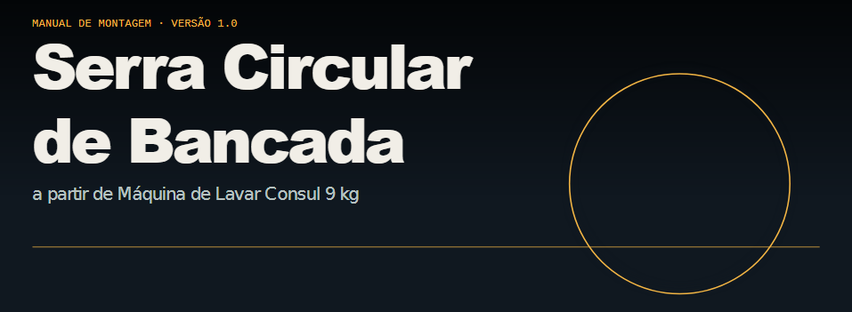
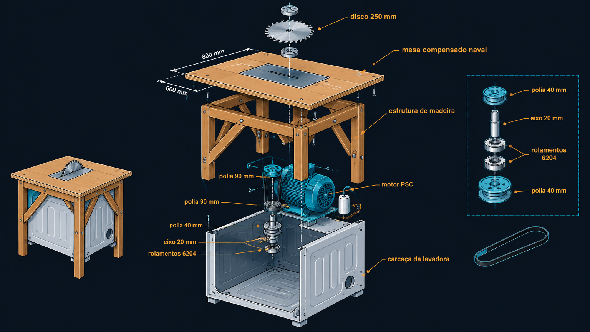
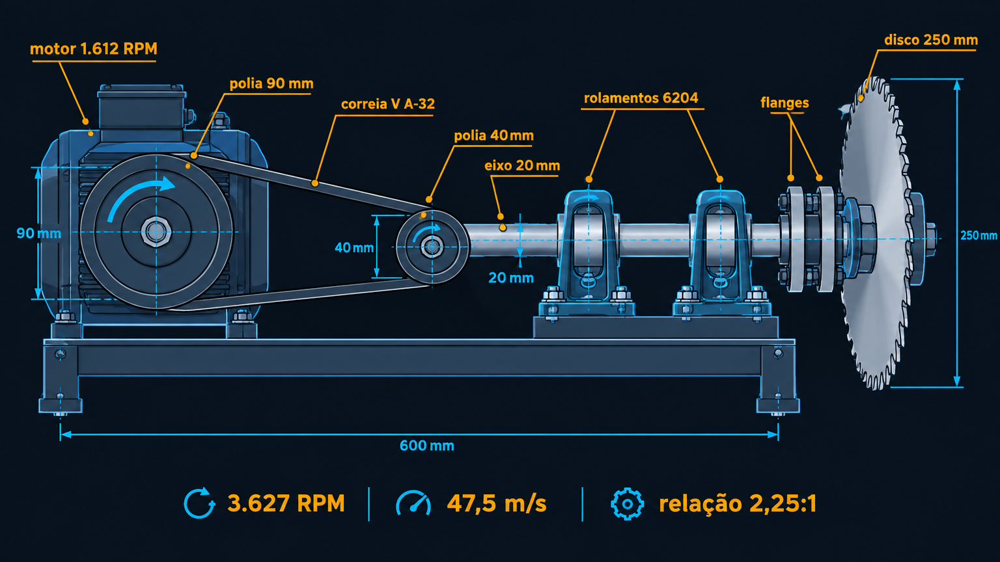
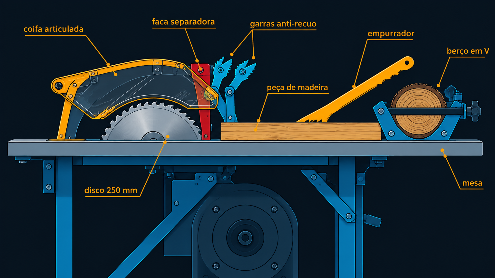
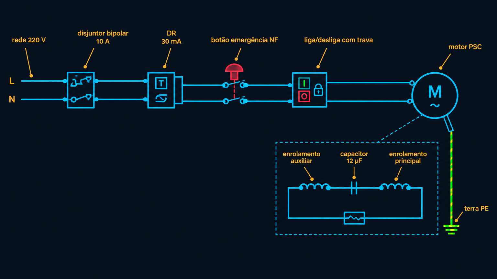
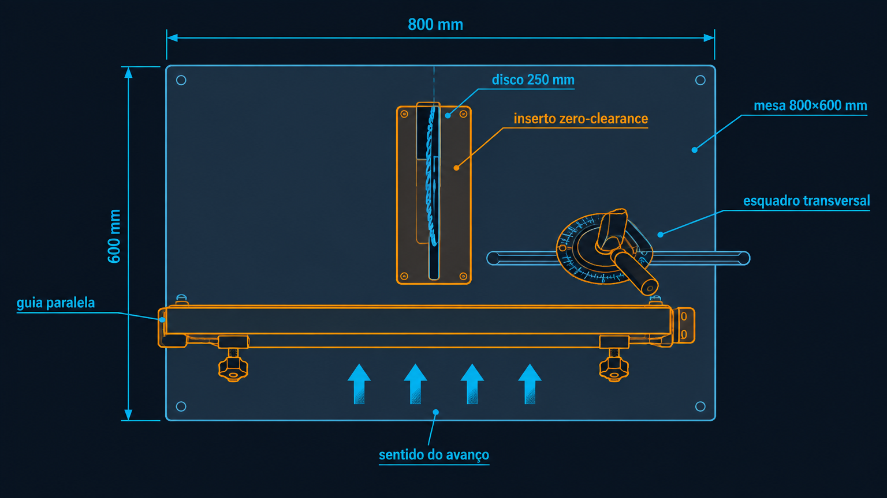

Base
Lavadora Consul 9 kg — CWM09AB/CWB09BB com mecanismo de agitação quebrado; carcaça, cesto e motor em perfeito estado.
Manual gratuito que converte em serra de bancada fixa o motor e a carcaça de uma lavadora Consul 9 kg (CWM09AB/CWB09BB) com mecanismo de agitação irreparável. Projeto pessoal completo: diagnóstico do motor, transmissão, discos, guias, segurança (referências NR-12), elétrica (NR-10) e checklist de testes.
Lavadora Consul 9 kg — CWM09AB/CWB09BB com mecanismo de agitação quebrado; carcaça, cesto e motor em perfeito estado.
Serra circular de bancada fixa para cortar lenha da lareira no inverno — robusta, segura, de uso frequente.
Robustez, segurança e uso frequente — não é protótipo descartável.
Ferramentas manuais e componentes comprados prontos: sem torno, sem solda.

21 m/s insuficiente; necessário disco de ~478 mm; mancais do motor e eixo curto não suportam.
Motor PSC não parte; o capacitor é parte do motor, não da placa.
Ligação direta do motor à rede 220 V com proteções; manter capacitor 12 µF.
Specs, verificação de viabilidade, regime intermitente (S3 presumido), protetor térmico (confirmar).
Carcaça NÃO é estrutural (chapa 0,6–0,8 mm) — usar como revestimento/coleta; estrutura de madeira 60×60/40×60 com contraventamento; mesa compensado naval 25 mm 800×600 mm; altura 90 cm; inserto zero-clearance.
Polia V 90 mm + movida 40 mm → 2,25:1 → 3.627 RPM → 47,5 m/s; correia A-32 (~813 mm); kit eixo 20 mm + 2 rolamentos 6204-2RS; flanges ≥ 62,5 mm; M12 8.8, torque 70–90 N·m.
250 mm (10"), 24 dentes metal duro, furo 30 mm + bucha 30→20; RPM máx do disco ≥ 6.000 (operação ~3.600); profundidade 70–80 mm; nunca disco 60+ dentes em lenha.
Guia paralela 50×90 mm (paralelismo ≤ 0,5 mm, alívio na saída); esquadro transversal 250×75 mm; inserto zero-clearance.
Coifa, faca separadora (riving knife), empurrador, garras anti-recuo, protetor de correia, emergência NF 2P; EPIs; proibido luvas; inércia residual 10–25 s; berço em V para toras.
Disjuntor bipolar 10 A curva C → DR 30 mA → emergência NF 2P → botoeira com trava → motor PSC; fio 2,5 mm²; aterramento < 0,1 Ω; sentido de giro testado sem lâmina; NR-10 exige eletricista habilitado no quadro.
Checklist de 12 itens antes do 1º uso: terra < 0,1 Ω; megger 500 V > 1 MΩ; emergência < 1 s; RPM 3.440–3.630; corrente < 2 A; corte de prova 30 mm; temperatura < 90 °C após 5 min; teste DR mensal; rotina diária.





Não. A 1.600 RPM o disco de 250 mm gira a apenas ~21 m/s, abaixo da faixa de corte de madeira (40–65 m/s); para atingir 40 m/s seria necessário disco de ~478 mm. Além disso, os mancais do motor de lavadora e o eixo curto não suportam o conjunto. O manual usa polias na relação 2,25:1 (3.627 RPM, 47,5 m/s) com eixo próprio e rolamentos.
Sim. O motor é de indução monofásica tipo PSC: sem o capacitor permanente de 12 µF não há defasamento entre os enrolamentos, o motor não parte e o enrolamento auxiliar queima em minutos. O capacitor é parte do motor, não da placa de comando. A placa eletrônica pode ser eliminada; o capacitor, não.
É uma adaptação caseira com lâmina exposta e riscos reais (kickback, inércia). A segurança depende de executar 100% das proteções: coifa, faca separadora, empurrador, garras anti-recuo, botão de emergência, DR 30 mA e aterramento. O operador assume os riscos e deve ler o disclaimer e o manual completo antes de operar.
O manual é 100% gratuito. Os componentes novos (polias, correia, kit eixo com rolamentos e flanges, disco 250 mm, madeira, elétrica com DR, coifa, faca, emergência e EPIs) somam cerca de R$ 575 a R$ 1.070, média ~R$ 800. Motor, capacitor e carcaça vêm da própria lavadora.
Projeto gratuito baseado em experiência pessoal. Este manual é material estritamente orientativo e educacional. Não constitui projeto executivo e não substitui projeto assinado por profissional habilitado com ART no CREA, nem serviço profissional de engenharia. O construtor e operador declara que: (a) executa integralmente a montagem por conta própria, com ferramentas e componentes de sua escolha, assumindo erros de execução e a verificação de medidas, normas e legislação locais; (b) tem ciência de que o equipamento é adaptação caseira de motor e carcaça fora de sua aplicação original, com lâmina rotativa exposta, inércia residual e risco de contragolpe (kickback), assumindo os riscos de operação dentro dos limites declarados; (c) responde pelo cumprimento das normas de segurança, pelo uso de EPIs e pelas instalações elétricas executadas por profissional habilitado conforme NR-10; (d) a responsabilidade por danos a terceiros decorrentes da construção ou operação é exclusiva do construtor/operador. Este termo não exclui, e nenhum documento poderia excluir, a responsabilidade penal, o dolo ou a culpa grave. Em caso de comercialização deste material, aplicam-se as normas de proteção ao consumidor (Lei nº 8.078/1990). Use somente com lâmina afiada, madeira seca e todos os dispositivos de segurança instalados.
PDF com as 8 etapas, lista completa de materiais com medidas e torques, procedimentos de segurança e checklist de testes.